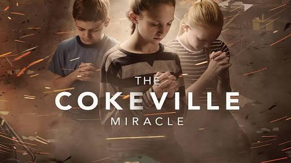
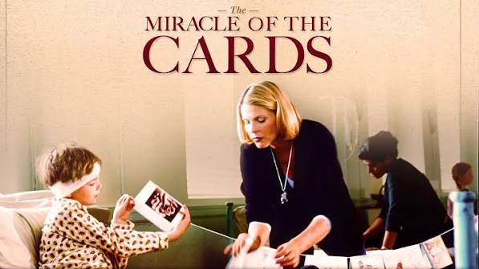
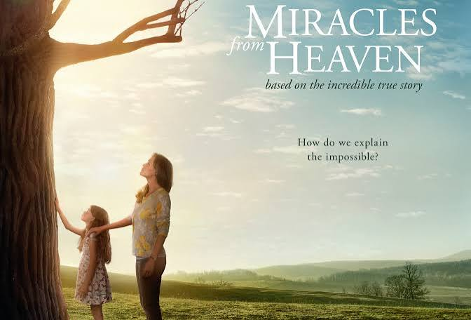

 The Cokeville Miracle Children who were held hostage in their elementary school tell stories of miraculous things. Source
I Am Gabriel The town of Promise, TX is dying when a wandering boy shows its residents the way to salvation. Source
 The Miracle of the Cards The true story of an 8-year old boy with a brain tumor who launched a worldwide campaign to break the Guinness record for receiving the most get-well cards. Source
 Miracles From Heaven The incredible true story of a Texas family who experienced a miraculous healing after a freak accident. Source